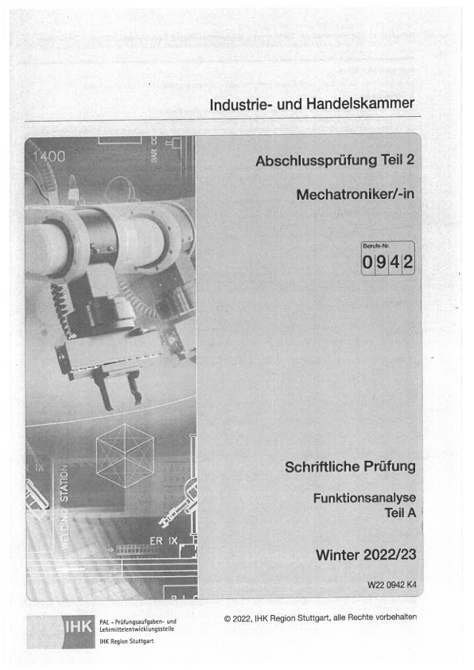

Arbeitsplanung → Funktionsanalyse → WiSo. 96 Aufgaben, 74 eindeutige MC-Antworten und 22 U-Lösungen. Keine manuellen Antwortprüfungen offen.
| Modul | Aufgaben | MC | U-Lösungen | Review | Links |
|---|---|---|---|---|---|
| arbeitsplanung | 36 | 28/28 | 8/8 | 0 | Alle Aufgaben / Quellen · Lernen |
| funktionsanalyse | 36 | 28/28 | 8/8 | 0 | Alle Aufgaben / Quellen · Lernen |
| wiso | 24 | 18/18 | 6/6 | 0 | Alle Aufgaben / Quellen · Lernen |
Bestehende Profile portrait-explicit-regions / official-ring-grid wiederverwendet. Seitenbezogene Trennlinien geprüft; keine globalen Schwellen geändert. AP U4: Getriebe mit Stückliste auf Seite 25 (lesbare Querformatfassung). FA: hydraulischer Schaltplan Seite 23 (U7), Getriebe Seite 25 (U3/U6), Motorenwerte Seite 27 (U1/U2). Gemeinsame Anlagen werden einmal gespeichert und referenziert.
WiSo: U4/U5/U6 besitzen explizite Fortsetzungen auf Seiten 13/15/17. U2 bleibt als vollständige, im Original gedrehte Abbildung erhalten. Offizielle WiSo-Antworten: Fach-Nr. 18 für Mechatroniker, nicht die andere Berufsgruppe auf Lösungsseite 13.
Der Archivname „23_24 Funktionsanalyse.pdf“ ist irreführend: Das Originaldeckblatt bezeichnet eindeutig Winter 2022/23, W22 0942 K4. Dateiname und SHA-256 bleiben erhalten.

88 neue Cache-Seiten: AP25 + FA28 + WiSo20 + Lösung15. Zusätzlich ein diagnostisches FA-Deckblatt vor Registrierung gerendert: insgesamt 89 neue Render-Aufrufe. Alte PDF-Neuscans: 0. Wiederholung: 12 Schritte übersprungen, 0 Render. 62 zuvor produktive Quellen unverändert.
Unverändertheitsnachweis · Status
Lernen / Originalprüfung / Jahrfilter · Fortschritt / Notizen / Mobile
Neuer Modulfortschritt · Mobilansicht · FA Antwortquelle
Nach Winter 2022/23 gestoppt. Keine Verarbeitung Sommer 2023+, keine Änderung von Lernfunktionen oder Firebase.